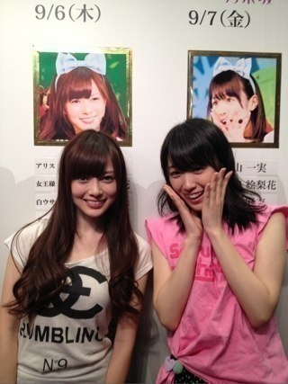
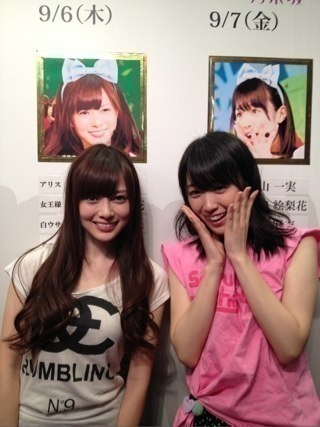

2012/0910Mon（´-`）.｡oO(かずみん×96
いつも応援ありがとうございます！
今日で乃木坂初の
ミュージカル東京公演
"16人のプリンシパル"
千秋楽を無事に終えました！
来て下さったみなさん、
遠くから応援して下さったみなさん、
本当にありがとうございました！
今回はミュージカル公演という
初めての心意気で
最初に内容を聞いた時は
びっくりしました！
でもその時から今日まで
ワクワクが止まらなかったです！
あっという間に終わって
しまいましたが
忘れられない公演になりました。
大好きな歌が沢山歌え
たくさんの方の笑顔を見ることができ
私は毎日幸せでした！！
そして私はこの公演を通して、
私は演技が大好きになりました！
普段の私はアイドルっぽくなくて...
そんな自分が嫌だったので
『ステージで歌ってる時は
違う自分を見せたい』と
ずっと思っていました。
今回、自分なりに
アリスや女王様、白うさぎ
チェシャ猫を演じることができ、
色々な自分の引き出しを
見つけることができて
本当に嬉しかったです。
チャンスをくれたみなさん、
本当にありがとう。
夢みたいに信じられなくて
嬉しかったです。
そして演出のみなさん、
スタッフさん、
メンバーのみんな、
本当にお疲れ様でした。
素敵な経験、思い出を
ありがとうございました！

いつも一緒まいやんと♪
《うちらは乃木坂上り坂》
公演の経験をバネにし、
さらに上を目指して
これからも頑張ります。
みなさん、これからも
応援よろしくお願いします^^
--------
今日はぐっすり眠れそうだ(^-^)
いささかアメイジング＼(^o^)／笑
おやすみなさい...☆
今日で乃木坂初の
ミュージカル東京公演
"16人のプリンシパル"
千秋楽を無事に終えました！
来て下さったみなさん、
遠くから応援して下さったみなさん、
本当にありがとうございました！
今回はミュージカル公演という
初めての心意気で
最初に内容を聞いた時は
びっくりしました！
でもその時から今日まで
ワクワクが止まらなかったです！
あっという間に終わって
しまいましたが
忘れられない公演になりました。
大好きな歌が沢山歌え
たくさんの方の笑顔を見ることができ
私は毎日幸せでした！！
そして私はこの公演を通して、
私は演技が大好きになりました！
普段の私はアイドルっぽくなくて...
そんな自分が嫌だったので
『ステージで歌ってる時は
違う自分を見せたい』と
ずっと思っていました。
今回、自分なりに
アリスや女王様、白うさぎ
チェシャ猫を演じることができ、
色々な自分の引き出しを
見つけることができて
本当に嬉しかったです。
チャンスをくれたみなさん、
本当にありがとう。
夢みたいに信じられなくて
嬉しかったです。
そして演出のみなさん、
スタッフさん、
メンバーのみんな、
本当にお疲れ様でした。
素敵な経験、思い出を
ありがとうございました！

いつも一緒まいやんと♪
《うちらは乃木坂上り坂》
公演の経験をバネにし、
さらに上を目指して
これからも頑張ります。
みなさん、これからも
応援よろしくお願いします^^
--------
今日はぐっすり眠れそうだ(^-^)
いささかアメイジング＼(^o^)／笑
おやすみなさい...☆
2012/09/10 01:12
コメント(551)
今日は
いささかアメイジングじゃおさまらない！！
千秋楽本当に感動したよー！！！
本当にお疲れさまでした！！
一実さん、お疲れ様。
とりあえず、今日はゆっくり休め！
とりあえず、今日はゆっくり休め！
いささかアメージング！
今日千秋楽行ったよ！
かずみさん、輝いてたよ
アイドルのかずみさん、いいよね
なんか元気もらったよ
今日千秋楽行ったよ！
かずみさん、輝いてたよ
アイドルのかずみさん、いいよね
なんか元気もらったよ
ヤッシーです(^-^)v
東京公演、お疲れ様でしたo(^o^)o!!
みんな、めちゃくちゃ成長したよ!!
行けなかったのは残念(T^T)
へばっまずな(^-^)/~~
東京公演、お疲れ様でしたo(^o^)o!!
みんな、めちゃくちゃ成長したよ!!
行けなかったのは残念(T^T)
へばっまずな(^-^)/~~
かずみん！
とりあえず全公演本当にお疲れさまです！
本当に初めての連日公演でいろいろと大変だったでしょう。
本当にお疲れさま！
ゆっくり休んでくださいね！
ばいなら！
p(^^)q
とりあえず全公演本当にお疲れさまです！
本当に初めての連日公演でいろいろと大変だったでしょう。
本当にお疲れさま！
ゆっくり休んでくださいね！
ばいなら！
p(^^)q
初コメです！
中3のあやかです！
のぎどこみましたー！
いささかー
金曜日の公演いきました！みごと、金曜日はアリス役(^з^)-☆
裏声すごぃー(^_^)/
公演お疲れさまでした☆彡
あやかより(^з^)-☆
東京公演お疲れ様です♪
ステージ上の一実ｻﾝとっても素敵でアメイジングでした(T-T)
明日はオフですか?
ゆっくり休んで疲れをとってください(^-^)v
お休みなさい(-.-)Zzz・・・・
公演全日程終了お疲れ様でした！
ゆっくり休んで疲れをとってくださいね。
いささかアメイジング！（笑）
ゆっくり休んで疲れをとってくださいね。
いささかアメイジング！（笑）
この数日で皆、さまよいながら何かを探してたんよな？
それを見つけられたら
生きてゆける そんな気がする
それを見つけられたら
生きてゆける そんな気がする
かずみん、楽しいミュージカルありがとう！楽しかったよ。
かずみん( ｀.∀´）y-
サムライ気に入りましたｗｗ
オシカレ
バイバイ
東京公演お疲れ様☆
今回は見に行けなかったけど、
今度あったら絶対見に行くね☆
成長した一実さんに会うのが楽しみだー
とうとうあと２週間☆
いささかアメージングも流行らしていこうね ☆
一実さんも立派なアイドルだよー。
今回は見に行けなかったけど、
今度あったら絶対見に行くね☆
成長した一実さんに会うのが楽しみだー
とうとうあと２週間☆
いささかアメージングも流行らしていこうね ☆
一実さんも立派なアイドルだよー。
公演お疲れ
とりあえずゆっくり休んで(^^)
おやすみ
とりあえずゆっくり休んで(^^)
おやすみ
公演お疲れ様
６日、木曜日の公演見に行ってたよ
かずみさん 素晴らしかったよ
舞台で実力を発揮するタイプだよね
公演は思ってたいじょうに
みんな素晴らしくて
１６人選ぶのに本当に時間ぎりぎりまで
悩んだよ
乃木坂は、確実に成長していってるよ
６日、木曜日の公演見に行ってたよ
かずみさん 素晴らしかったよ
舞台で実力を発揮するタイプだよね
公演は思ってたいじょうに
みんな素晴らしくて
１６人選ぶのに本当に時間ぎりぎりまで
悩んだよ
乃木坂は、確実に成長していってるよ
お疲れ様(*^ー^*)
みんなほんまに良く頑張ったね
乃木ここ今日も楽しかったわ
みんなほんまに良く頑張ったね
乃木ここ今日も楽しかったわ
どーも！オレンジです！
かずみぃぃぃぃぃん！
9日間お疲れ様(*^^*)
1,2,3,4位しか取ってないって、改めて考えると物凄いよね(*^^*)
本当にお疲れ様(*^^*)
俺も忘れられない楽しいイベントだったと思う！
生歌とか最高すぎて！
順位のこともあるし、自分に自信がついたんじゃないかな？？
まぁポジティブなかずみんに言うのもあれだけどね(笑)
俺もポジティブな気持ちで勉強頑張ろう(*^^*)
本当にお疲れ様!!!!!
明日はゆっくり休んでね(^^)d
それじゃあこの辺で！
今日はお疲れ様(*^^*)
明日も頑張ろう
愛羅武勇
 オレンジ
オレンジ
かずみぃぃぃぃぃん！
9日間お疲れ様(*^^*)
1,2,3,4位しか取ってないって、改めて考えると物凄いよね(*^^*)
本当にお疲れ様(*^^*)
俺も忘れられない楽しいイベントだったと思う！
生歌とか最高すぎて！
順位のこともあるし、自分に自信がついたんじゃないかな？？
まぁポジティブなかずみんに言うのもあれだけどね(笑)
俺もポジティブな気持ちで勉強頑張ろう(*^^*)
本当にお疲れ様!!!!!
明日はゆっくり休んでね(^^)d
それじゃあこの辺で！
今日はお疲れ様(*^^*)
明日も頑張ろう
愛羅武勇
あっ俺のアリス発見(*≧∀≦*)
一実が最高の笑顔で千秋楽迎えられますようにって神社行って祈ってきたよ(*^^*)
今日はほんま最高の１日やぁ(^-^)
一実が最高の笑顔で千秋楽迎えられますようにって神社行って祈ってきたよ(*^^*)
今日はほんま最高の１日やぁ(^-^)
千秋楽お疲れさま＼(^O^)／
実際には行けなかったけど
地元から応援してたよ!!
これからも頑張ってね(*^^*)
公演本当にお疲れさま～
最終公演見に行きました
一幕はお客さんも固くなってるから、自己PRでみんなを笑顔にしてくれるかずみんは好感度が高くなるのかも
素敵な、幸せな時間をありがとうございました
最終公演見に行きました
一幕はお客さんも固くなってるから、自己PRでみんなを笑顔にしてくれるかずみんは好感度が高くなるのかも
素敵な、幸せな時間をありがとうございました
かずみんこんばんわ～
公演お疲れ様～♪
全日程終わったなw
運よく初日に見に行けて良かったw
ファンとしても色々考えさせられるいい経験になったわww
これからもガジ頑張ー！
いささかポジティブsay！
ほなねﾉｼ
公演お疲れ様～♪
全日程終わったなw
運よく初日に見に行けて良かったw
ファンとしても色々考えさせられるいい経験になったわww
これからもガジ頑張ー！
いささかポジティブsay！
ほなねﾉｼ
お疲れっ！
東京公演7日に観に行ったよ！
マジで感動ー
素晴らしい公演だった！！
みんなの全力が伝わってきた！！
胸苦しくなる時もあったけど
かずみんっ
人を引き込む力すごいね
俺もかずみんワールドに引き込まれた1人笑
1位もおめでとう！！
前にブログで自信ないって言ってたけど
今回の公演で自信がついたんじゃない？笑
これからも現状に満足せずに
頑張って！！
『現状維持は衰退ばかり』！！
東京公演7日に観に行ったよ！
マジで感動ー
素晴らしい公演だった！！
みんなの全力が伝わってきた！！
胸苦しくなる時もあったけど
かずみんっ
人を引き込む力すごいね
俺もかずみんワールドに引き込まれた1人笑
1位もおめでとう！！
前にブログで自信ないって言ってたけど
今回の公演で自信がついたんじゃない？笑
これからも現状に満足せずに
頑張って！！
『現状維持は衰退ばかり』！！
谷内君が神社で祈ってくれてたさかい
かずみんは守られてるんやで
かずみんは守られてるんやで
今回経験したことを忘れずに、今後の乃木坂の活動や、かずみんだけの活動とか色々な場面で活かせると良いね。
公演お疲れ様！
ゆっくり休んでください。
アメイジング＼(^o^)／
かずみさん、9日間おつかれ坂でした！
水曜日に観に行かせていただきましたが、かずみさんの表情や歌声、演技など本当に魅力的でした。
かずみさんがみんなから愛されていることがよくわかりました！
自分も忘れられない公演になりました、本当にありがとうございます＼(^o^)／
まだまだ坂道は続きますが、これからも応援させていただきます！
ゆっくり休んでくださいね！
いささか吹きましたｗｗｗｗｗ
それではおやすみなさい＼(^o^)／
かずみさん、9日間おつかれ坂でした！
水曜日に観に行かせていただきましたが、かずみさんの表情や歌声、演技など本当に魅力的でした。
かずみさんがみんなから愛されていることがよくわかりました！
自分も忘れられない公演になりました、本当にありがとうございます＼(^o^)／
まだまだ坂道は続きますが、これからも応援させていただきます！
ゆっくり休んでくださいね！
いささか吹きましたｗｗｗｗｗ
それではおやすみなさい＼(^o^)／
かずみんお疲れ(*≧∀≦*)
谷内くんがかずみんの為にお祈りしてたよ(*^^*)
公演ほんまによく頑張ったね(*≧∀≦*)
本当にお疲れ様でした(*^^*)
今日はゆっくり休んでまた明日から頑張ってなd=(^o^)=b
谷内くんがかずみんの為にお祈りしてたよ(*^^*)
公演ほんまによく頑張ったね(*≧∀≦*)
本当にお疲れ様でした(*^^*)
今日はゆっくり休んでまた明日から頑張ってなd=(^o^)=b
一実はほんと良かったと思う
だからみんな投票したんだよ
何より楽しめてた感じがした
もちろん不安とかもあっただろうけど…
自信持ってやってっていいと思う
でも、決しておごらず、向上心は忘れずに
公演楽しかったです
お疲れ様でした
だからみんな投票したんだよ
何より楽しめてた感じがした
もちろん不安とかもあっただろうけど…
自信持ってやってっていいと思う
でも、決しておごらず、向上心は忘れずに
公演楽しかったです
お疲れ様でした
どーもどーも！
なかじーと申す(￣^￣)ゞ
東京公演お疲れ様(^O^)
僕は今日の千秋楽を観に行って
思ったことは
かずみんのスイッチのONとOFFの
切り替えの早さにビックリしました！
さすがプロのアイドルやなと
実感しました♪♪
昼の公演の
女王様の熱演っぷりと
自己PRの歌は
ホンマに鳥肌が立ったわぁ☆☆
感動です(T ^ T)
僕はこれからの
かずみんに注目していきます！
この公演で体は疲れてると思うから
明日はゆっくり休んで
また元気なかずみんを
僕たちファンに見せて下さい♪♪
待ってます(￣^￣)ゞ
それではまたコメントします！
ほなねー( ´ ▽ ` )ﾉ
なかじーと申す(￣^￣)ゞ
東京公演お疲れ様(^O^)
僕は今日の千秋楽を観に行って
思ったことは
かずみんのスイッチのONとOFFの
切り替えの早さにビックリしました！
さすがプロのアイドルやなと
実感しました♪♪
昼の公演の
女王様の熱演っぷりと
自己PRの歌は
ホンマに鳥肌が立ったわぁ☆☆
感動です(T ^ T)
僕はこれからの
かずみんに注目していきます！
この公演で体は疲れてると思うから
明日はゆっくり休んで
また元気なかずみんを
僕たちファンに見せて下さい♪♪
待ってます(￣^￣)ゞ
それではまたコメントします！
ほなねー( ´ ▽ ` )ﾉ
かーずみん( 〃ω〃)
元気ですかー？
握手会まだかなー(´・ω・`)
はよ会いたいです。
会って、言いたいこといっぱい言いたいなー。
あっ、千秋楽
最後は3位だったんだね。
お疲れ様♪
ほんまは1位で終わって欲しいって
思ってたけどさ、頑張ったんだよね？
悔いないよね？
じゃあ文句ないよ。
せっかくエアー投票したのに←
役立たずでごめん。
公演で得たもの沢山あった？
観てないけどさ、1位なったって聞いた時は超嬉しかったなー(*^^*)
自分の推しが1位ってやっぱ嬉しいんだね。初めて知ったよ(笑)
あっ、今度、公演どんなんしたか聞かせてなー
じゃあ、ばいっ
てかわさおって意味不明
ばい
＼(^o^)／
ほんま お疲れさまでした
今度は 公演に当ててもらって 生で観てみたいですo(^-^)o
今度は 公演に当ててもらって 生で観てみたいですo(^-^)o
アリス役が一番に合うのは
かずみんだー(笑)
これからも、頑張ってね!!
今から録画した乃木坂ってどこ
みるーヽ(^0^)ﾉ
☆☆☆☆☆☆☆☆
☆★★★★★★☆
☆★★☆☆★★☆
☆★★☆☆★★☆
☆☆☆☆★★☆☆
☆☆☆★★☆☆☆
☆☆☆★★☆☆☆
☆☆☆★★☆☆☆
☆☆☆★★☆☆☆
☆☆☆☆☆☆☆☆
一実さん
本当にお疲れ様です！
これからも頑張ってください(>_<)
応援してます！
大好きですよ♪
翔より
千秋楽おつかれさま！
あっという間に一週間たったけど、乃木メンにはほんとに内容の濃い一週間だったんじゃないかなぁ。
この短い期間でどれだけ初めてを経験して成長したんだろうか…
今回どの公演も当たらなくてほんとに悔しかった…
次見るときは前見た乃木坂46とは成長して、全然違うものになっているのかなぁって寂しさもある。
ただ次会ったときにめっちゃ成長したね！って言える楽しみもある！
次は名古屋全握でライブが見れるはずだから、まずは一週間の成長楽しみにしてるよ！
あっという間に一週間たったけど、乃木メンにはほんとに内容の濃い一週間だったんじゃないかなぁ。
この短い期間でどれだけ初めてを経験して成長したんだろうか…
今回どの公演も当たらなくてほんとに悔しかった…
次見るときは前見た乃木坂46とは成長して、全然違うものになっているのかなぁって寂しさもある。
ただ次会ったときにめっちゃ成長したね！って言える楽しみもある！
次は名古屋全握でライブが見れるはずだから、まずは一週間の成長楽しみにしてるよ！
東京公演本当にお疲れ様でした！(o^^o)
アリス役にも選ばれて本当に輝いていたと思います♫
女王様役もかなりハマってましたね（笑）(￣▽￣)
また乃木坂みんなの公演が見たいです＼(^o^)／
いささかアメイジングー
頑張って使ってみます（笑）（・◇・）
アリス役にも選ばれて本当に輝いていたと思います♫
女王様役もかなりハマってましたね（笑）(￣▽￣)
また乃木坂みんなの公演が見たいです＼(^o^)／
いささかアメイジングー
頑張って使ってみます（笑）（・◇・）
ヤッホー
アニマルたくちゃんだよ♪
今日の公演良かったよ♪
マジで最高だった★(T^T)
アニマルたくちゃんだよ♪
今日の公演良かったよ♪
マジで最高だった★(T^T)
かずみん、公演お疲れさまでした^^
前半は出張、後半はチケットとれず
観にいけなくてごめんね＞＜
けれどスタッフさんのブログで順位をみてびっくりしました♪
大好きなかずみんの頑張りが認められてうれしいです。
けれど同時に16人に選ばれず2部にたてなかったメンバーの気持ちを考えると胸が苦しかったのですが、
かずみんのブログで精一杯さがいつも見られて、手を抜かずに今回の公演に立ち向かったこと。
かずみんのポジティブさがこの公演を成功に導いたこと。
それらを考えるとだいぶ救われました。
身体のあちこちが痛かったり、
心が疲れてしまったり、大変だと思いますがしっかり休んでまた走り続けてください^^
かずみん、またきれいになったね。明日からもがんば！！
前半は出張、後半はチケットとれず
観にいけなくてごめんね＞＜
けれどスタッフさんのブログで順位をみてびっくりしました♪
大好きなかずみんの頑張りが認められてうれしいです。
けれど同時に16人に選ばれず2部にたてなかったメンバーの気持ちを考えると胸が苦しかったのですが、
かずみんのブログで精一杯さがいつも見られて、手を抜かずに今回の公演に立ち向かったこと。
かずみんのポジティブさがこの公演を成功に導いたこと。
それらを考えるとだいぶ救われました。
身体のあちこちが痛かったり、
心が疲れてしまったり、大変だと思いますがしっかり休んでまた走り続けてください^^
かずみん、またきれいになったね。明日からもがんば！！
♪♪かずみん♪♪
こんばんは=^・^=
９日間ほんとお疲れ様でした(^^ゞ
褒めてあげるね♪
「よくがんばりました!!」
かずみんは何か掴んだようだね。良かった(*^^*)
いささかアメイジング!!
今日の乃木どこ？で言ってたね＼(^O^)／
明日はオフかな？
ゆっくり休んでください♪
おやすみ～♪
またね(*・ｘ・)ノ~~~♪
こんばんは=^・^=
９日間ほんとお疲れ様でした(^^ゞ
褒めてあげるね♪
「よくがんばりました!!」
かずみんは何か掴んだようだね。良かった(*^^*)
いささかアメイジング!!
今日の乃木どこ？で言ってたね＼(^O^)／
明日はオフかな？
ゆっくり休んでください♪
おやすみ～♪
またね(*・ｘ・)ノ~~~♪
かずみん こんばんは^^
公演お疲れ様でした。今回の公演を通して感じたことは『かずみんはファン目線で絶大な人気がある！』ということ！かずみん、あなたはそれを実証しました。歌、ダンスに加えて演技も好きになれて良かったですね。今のかずみんの勢いは凄い！是非、この勢いをそのままに『合言葉』を達成して下さいね！
合言葉は『いささかアメイジング！』ではないよ！(笑)
ゆっくり休んでね^^
いべりこ牛
公演お疲れ様でした。今回の公演を通して感じたことは『かずみんはファン目線で絶大な人気がある！』ということ！かずみん、あなたはそれを実証しました。歌、ダンスに加えて演技も好きになれて良かったですね。今のかずみんの勢いは凄い！是非、この勢いをそのままに『合言葉』を達成して下さいね！
合言葉は『いささかアメイジング！』ではないよ！(笑)
ゆっくり休んでね^^
いべりこ牛
かずみん、
1週間、おつかれさまッ★*
今回の東京公演、行きたかったなぁ！
今度ゎ絶対あててやる！笑
これからもガジ頑張ってください！ｗ
応援してますッ！
今日ゎゆっくり休んで！*
おやすみなさい
かずみさんこんばんは☆
公演、本当にお疲れ様でした！！
すばらしい結果を毎日聞いて、本当に胸が熱くなりました。
見ることができなくて、とても悔しかったです！！
かずみさんセンターをこの目にしっかり焼き付けたかった・・・
二度目のアリスの知らせを聞いたとき、
まさにいささかアメイジング＼(^o^)／でした（笑）
もう一度目ほどは驚きませんでしたが、
いくちゃんが強かったので、いささか・・・（笑）
かずみさんが今回のこの公演で得たものは何だったのでしょうか。
その真価が問われるのはこれからだと思います。
ここがゴールではなく、新たなスタートですよね。
これからのかずみさんが、
一回りも二回りも大きく成長した姿を見せてくださったなら、
ファンとして、これ以上嬉しいことはありません。
とりあえず、今日はゆっくり休んで、
明日からまたガジ頑張っていきましょう！！
いつだって、どこだって、
全力ガジ応援しています！！！！
P.S.「ポジティブ」が、「Love＆Peace」のような普遍的なメッセージとして定着してくれたらいいですよね！！そんなことを想像しています。
公演、本当にお疲れ様でした！！
すばらしい結果を毎日聞いて、本当に胸が熱くなりました。
見ることができなくて、とても悔しかったです！！
かずみさんセンターをこの目にしっかり焼き付けたかった・・・
二度目のアリスの知らせを聞いたとき、
まさにいささかアメイジング＼(^o^)／でした（笑）
もう一度目ほどは驚きませんでしたが、
いくちゃんが強かったので、いささか・・・（笑）
かずみさんが今回のこの公演で得たものは何だったのでしょうか。
その真価が問われるのはこれからだと思います。
ここがゴールではなく、新たなスタートですよね。
これからのかずみさんが、
一回りも二回りも大きく成長した姿を見せてくださったなら、
ファンとして、これ以上嬉しいことはありません。
とりあえず、今日はゆっくり休んで、
明日からまたガジ頑張っていきましょう！！
いつだって、どこだって、
全力ガジ応援しています！！！！
P.S.「ポジティブ」が、「Love＆Peace」のような普遍的なメッセージとして定着してくれたらいいですよね！！そんなことを想像しています。
お疲れ様でしたー！(*^◯^*)
名古屋から毎日乃木坂のこと、
かずみんのこと応援してたよ！
大好きだよーヾ(＠⌒ー⌒＠)ノ
これからも乃木坂一筋！☆
ななみより♪
名古屋から毎日乃木坂のこと、
かずみんのこと応援してたよ！
大好きだよーヾ(＠⌒ー⌒＠)ノ
これからも乃木坂一筋！☆
ななみより♪
お疲れ様でした！！＼(^o^)／
自分は7日行って、奇跡の２列目というハイパー間近で見れた、かずみんアリスメッチャクチャ可愛かったです！！
帰りに速攻でかずみんのタオル買ったのは内緒です（笑）お部屋に飾らせて頂いてます＼(^o^)／
アンコールの時もすごく盛り上がって、思わず一緒に歌っちゃって最高の思い出になりました(*ﾟ∀ﾟ)
本当に素晴らしい公演どうもありがとうございました(｀･ω･´)ゞ
自分は7日行って、奇跡の２列目というハイパー間近で見れた、かずみんアリスメッチャクチャ可愛かったです！！
帰りに速攻でかずみんのタオル買ったのは内緒です（笑）お部屋に飾らせて頂いてます＼(^o^)／
アンコールの時もすごく盛り上がって、思わず一緒に歌っちゃって最高の思い出になりました(*ﾟ∀ﾟ)
本当に素晴らしい公演どうもありがとうございました(｀･ω･´)ゞ
公演お疲れ様(o^^o)
かずみんの順位がいつも上位の方で嬉しかった
いつか握手会だけではなくライブや公演に参加したいな(^^)/
かずみんの順位がいつも上位の方で嬉しかった
いつか握手会だけではなくライブや公演に参加したいな(^^)/
かずみん お疲れ様でした！
いろいろ得るものがあったようで、大変だったけど良かったね。
乃木メンみんな『ポジティブ！！』になったね。
かずみんも、この経験を今後に生かして貪欲に行こう！
したらね～ ポジピース（笑
いろいろ得るものがあったようで、大変だったけど良かったね。
乃木メンみんな『ポジティブ！！』になったね。
かずみんも、この経験を今後に生かして貪欲に行こう！
したらね～ ポジピース（笑
一実こんばんは!!
今日も１日お疲れさま♪
公演初日から千秋楽までホントあっという間やったなってオレも思う!!笑
結局１日も応援に行けずに終わってしまってごめんな(>_<)
結果だけは毎日運営ブログが更新されるであろう時刻にチェックして今日はどうやったんか、とか考えてた(^∇^)
実際見ることできやんかったけど今回得た経験をこれからの活動にどんどん活かしていかなな(^-^)v
いささか覚えたから使うわ(笑)
そういえばこないだ言った夏休みの宿題なんとか提出できたわ(￣ー￣)どや
体調には気をつけて!!
おやすみ♪
今日も１日お疲れさま♪
公演初日から千秋楽までホントあっという間やったなってオレも思う!!笑
結局１日も応援に行けずに終わってしまってごめんな(>_<)
結果だけは毎日運営ブログが更新されるであろう時刻にチェックして今日はどうやったんか、とか考えてた(^∇^)
実際見ることできやんかったけど今回得た経験をこれからの活動にどんどん活かしていかなな(^-^)v
いささか覚えたから使うわ(笑)
そういえばこないだ言った夏休みの宿題なんとか提出できたわ(￣ー￣)どや
体調には気をつけて!!
おやすみ♪
公演お疲れさまでした☆
かずみさんが女王役続きだったとき、アリス役こないかなぁ…と思っていたら！ 翌日キタ Σ(・ω・)
劇場でその姿を観たかったなぁ。
いまはゆっくり身体を休めてください☆
かずみさんが女王役続きだったとき、アリス役こないかなぁ…と思っていたら！ 翌日キタ Σ(・ω・)
劇場でその姿を観たかったなぁ。
いまはゆっくり身体を休めてください☆
最後まで完走出来てよかったね(^o^)／きっと今回の経験がどこかで活きることでしょう。
9日間の公演お疲れ様！
俺はなんと！
1日も行けませんでした…
アメイジング＼(^o^)／
萎えてます萎えてますよ。
公演に入れなかったんだから…
でもやっぱここはかずみんブログ
だからポジティブ＼(^o^)／
今日はゆっくり休んでください。
さかちょん
かずみんの頑張り、改めて感じたよ。
かずみんが元気でいてくれれば、私は安心
これからもずっと×100推します(*´∀｀*)
(⁰︻⁰) ☝これ、使ってください！笑
かずみん
本当にｵﾒﾃﾞﾄｳ(＾▽＾)ｺﾞｻﾞｲﾏｰｽ
毎回コメントするから、読んでね
おやすみ
かずみんが元気でいてくれれば、私は安心
これからもずっと×100推します(*´∀｀*)
(⁰︻⁰) ☝これ、使ってください！笑
かずみん
本当にｵﾒﾃﾞﾄｳ(＾▽＾)ｺﾞｻﾞｲﾏｰｽ
毎回コメントするから、読んでね
おやすみ


お疲れさま！
今日はぐっすり寝て
ちゃんと疲れをとってね(*^^*)
おやすみ♪